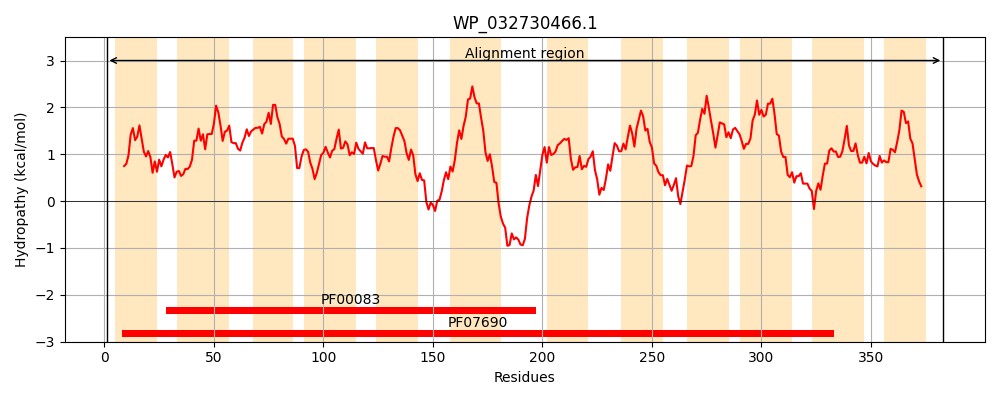
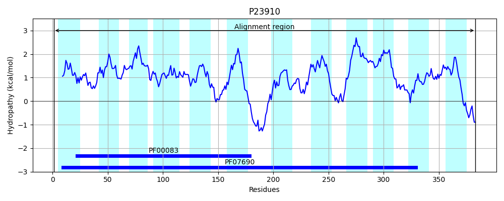
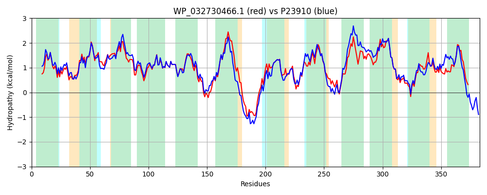

Hit Accession: P23910
Hit TCID: 2.A.1.2.14
Hit Description: gnl|BL_ORD_ID|9467 gnl|TC-DB|P23910|2.A.1.2.14 Protein ARAJ precursor - Escherichia coli.
Mach Len: 383
e:0.000000
Query TMS Count : 12
Hit TMS Count: 12
TMS-Overlap Score: 11.600000
Predicted Substrates:CHEBI:22599;arabinose, CHEBI:6181;L-arabinopyranose
BLAST Alignment:
Score: 1477 , Bit scores: 573 bits, E-value: 0.0e+00, Alignment length: 383, Percentage identity: 73
Query: 1 MKKTIFSLALGTFGLGMAEFGIMGVLPDMAHDVGISIPAAGNMIAWYAFGVVIGAPIMALLSSRFSLKSVMLFLAALCILGNTLFTLSSSYAMLALGRLVSGFPHGAFFGVGAIILSKIAPPGKVTAAVAGMIGGMTVANLVGVPGGTWLGHHFSWRYTFALIAVFNVAVLMTIFCWVPTLYDRTSTRLREQFRFLASPAPWLIFAATMFGNAGVFAWFSYIKPFMLNVSGFAESRMMLIMMLAGLGMVVGNLFSGKISGRFSPLRIAAMTDGVIAVTLLLIFAFGEHKVASLTLAFICCAGLFALSAPLQILLLQNAKGGEMLGAAGGQIAFNLGSAIGAFCGGMMIAQGFGWNSVALPAATLSFLAMSALLIYGCHQRRQA 383
MKK I SLALGTFGLGMAEFGIMGVL ++AH+VGISIPAAG+MI++YA GVV+GAPI+AL SSR+SLK ++LFL ALC++GN +FTLSSSY MLA+GRLVSGFPHGAFFGVGAI+LSKI PGKVTAAVAGM+ GMTVANL+G+P GT+L FSWRYTF LIAVFN+AV+ +++ WVP + D LREQF FL SPAPWLIFAATMFGNAGVFAWFSY+KP+M+ +SGF+E+ M IMML GLGMV+GN+ SG+ISGR+SPLRIAA+TD +I + LL++F G K SL AFICCAGLFALSAPLQILLLQNAKGGE+LGAAGGQIAFNLGSA+GA+CGGMM+ G +N VALPAA LSF AMS+LL+YG ++R+QA
Sbjct: 1 MKKVILSLALGTFGLGMAEFGIMGVLTELAHNVGISIPAAGHMISYYALGVVVGAPIIALFSSRYSLKHILLFLVALCVIGNAMFTLSSSYLMLAIGRLVSGFPHGAFFGVGAIVLSKIIKPGKVTAAVAGMVSGMTVANLLGIPLGTYLSQEFSWRYTFLLIAVFNIAVMASVYFWVPDIRDEAKGNLREQFHFLRSPAPWLIFAATMFGNAGVFAWFSYVKPYMMFISGFSETAMTFIMMLVGLGMVLGNMLSGRISGRYSPLRIAAVTDFIIVLALLMLFFCGGMKTTSLIFAFICCAGLFALSAPLQILLLQNAKGGELLGAAGGQIAFNLGSAVGAYCGGMMLTLGLAYNYVALPAALLSFAAMSSLLLYGRYKRQQA 383 | Protein Hydropathy Plots: |
|---|
|  |  |
Pairwise Alignment-Hydropathy Plot:
|
|---|
|  |